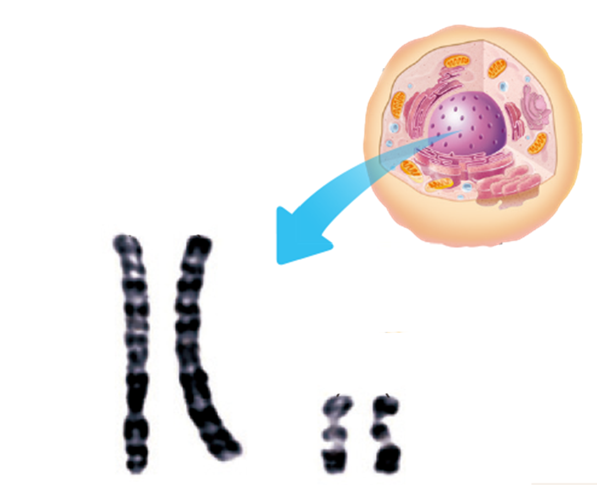
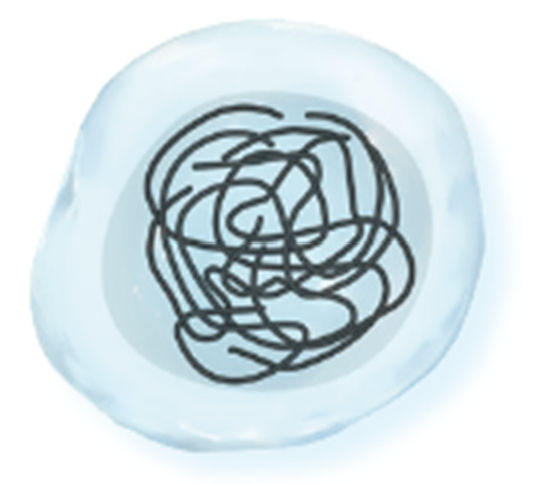
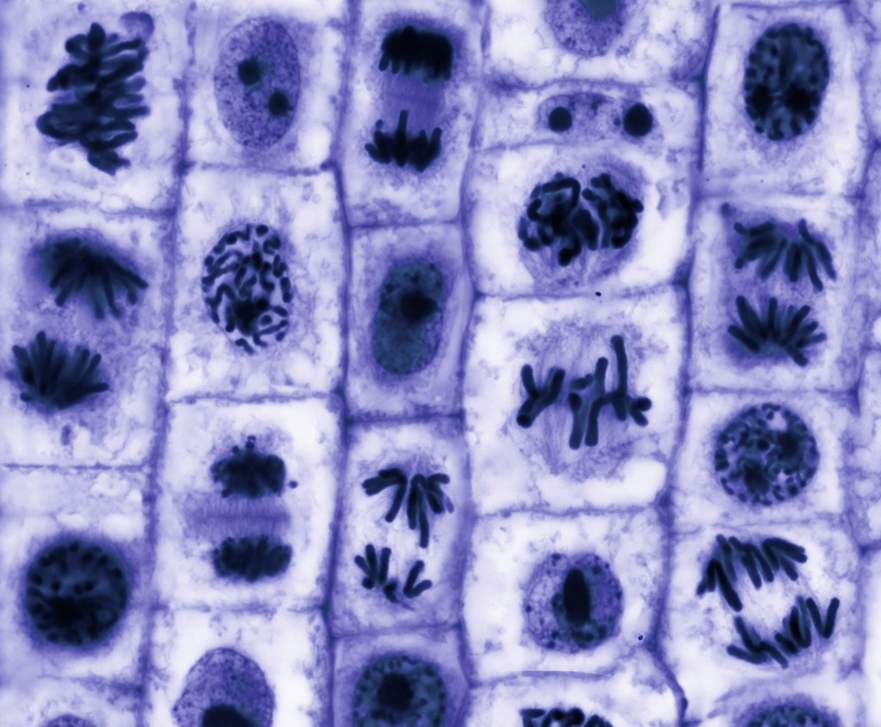
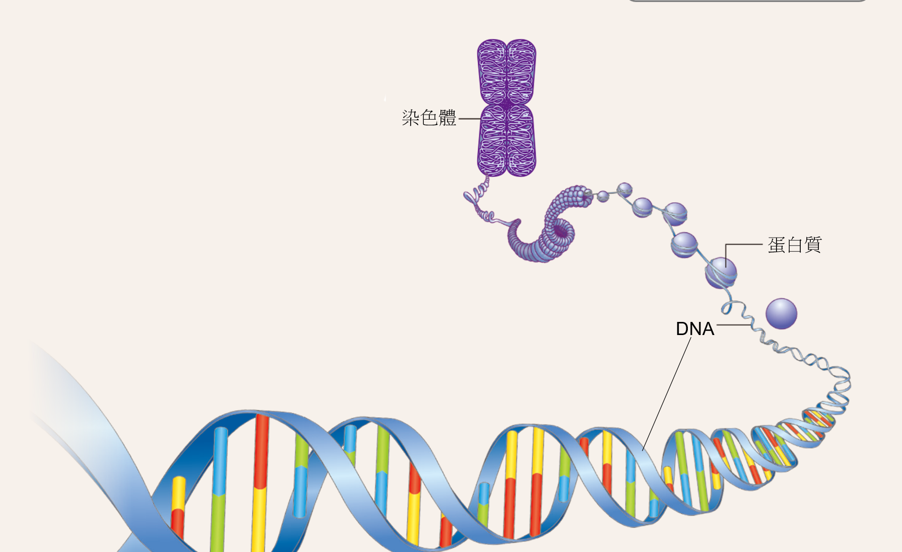

生命之藍圖：探索染色體
染色體
當細胞分裂時，原本不容易看清楚的遺傳物質，會濃縮成一條一條棒狀的構造，這就是染色體。 這個網頁把課本重點做成互動活動、圖像練習與多元評量，讓你一邊學、一邊玩，並檢查自己學會了多少。

情境導入
植物長高、根變長，和什麼有關？
先想想看，再看回饋
生物的生長與繁殖，都和細胞長大、成熟與分裂有關。先用一題暖身連到今天的主題吧！
暖身題：豆子發芽、洋蔥根持續生長，最合理的解釋是：
核心知識 1
什麼是染色體？
切換兩種狀態比較看看
細胞核內含有遺傳物質。平時呈細絲狀，不容易觀察；當細胞進行分裂時，會濃縮成一條一條棒狀構造，稱為染色體。
平時：細絲狀

平時不容易看清楚
遺傳物質平時像細絲一樣分散在細胞核內，在顯微鏡下不容易看得很清楚。

分裂時會濃縮成染色體
當細胞進行分裂時，遺傳物質濃縮，顯現出棒狀構造，這就是染色體。
核心知識 2
染色體由什麼組成？
點擊關鍵字查看說明
染色體主要由DNA和蛋白質組成，其中 DNA 是控制遺傳的物質。
組成探索
DNA： 是控制遺傳的物質，可以把它想成攜帶遺傳資訊的重要材料。
概念圖

🧠 點擊左側標籤，圖片對應位置會發亮
核心知識 3
什麼是同源染色體？
請找出兩對同源染色體
體細胞中的染色體通常兩兩成對，大小、形狀相似，一條來自父方、一條來自母方，這樣的一對稱為同源染色體。
配對遊戲：以下四條染色體皆是同一細胞核中的染色體，將大小、形狀相似者配成同源染色體。
知識快遞
不同生物的染色體數目
點擊卡片翻面
不同種類的生物，染色體數目會不同；同一種生物則具有固定的染色體數目。
豌豆
按一下看數目
染色體數目
14
共 7 對
人類
按一下看數目
染色體數目
46
共 23 對
黑猩猩
按一下看數目
染色體數目
48
共 24 對
多元評量
挑戰你的學習成果
1. 當細胞進行分裂時，遺傳物質會變成什麼樣子？
4. 配對題：點選左邊名詞，再點右邊對應的解釋
6. 排序題：請將名詞依「由小到大（由內到外）」排序
請將 染色體、DNA、細胞核 排成正確順序。